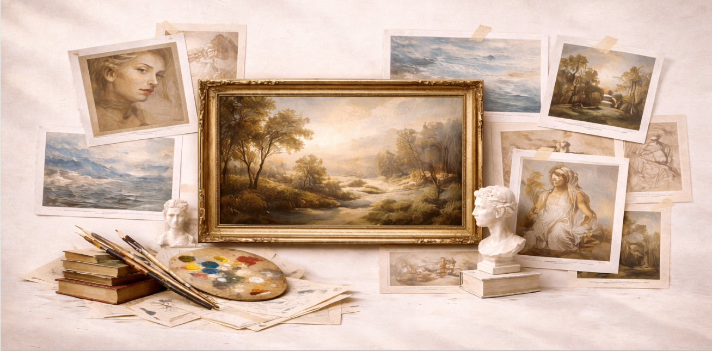

About

Curated Collectons
Thoughtfully organized collections that group artworks by movement, theme, and era to guide meaningful exploration
In-Depth Information
Comprehensive context on artists, techniques, and historical significance to support learning and appreciation
Accessible & Ad-Free
A clean, intuitive, ad-free experience designed to make art easy to discover and enjoy for everyone.
Join us on a journey through the history of art and uncover the stories behind the world’s most treasured masterpieces
Our Mission
Artistry Online is committed to sharing the richness of art history with a global audience by creating an accessible and thoughtfully organized digital gallery. We aim to preserve the cultural significance of artworks across eras and mediums while presenting them in a way that encourages learning, curiosity, and deeper understanding. By combining careful curation with historical context, we provide a space where art is not only displayed, but meaningfully explored and appreciated.
At the heart of our mission is the belief that art connects people across time, place, and experience. Through curated collections, artist archives, and detailed artwork pages, Artistry Online empowers users to discover, study, and build personal relationships with the works that resonate with them. By fostering education, preservation, and personal engagement, we strive to create a digital environment where art continues to inspire, inform, and unite diverse audiences.